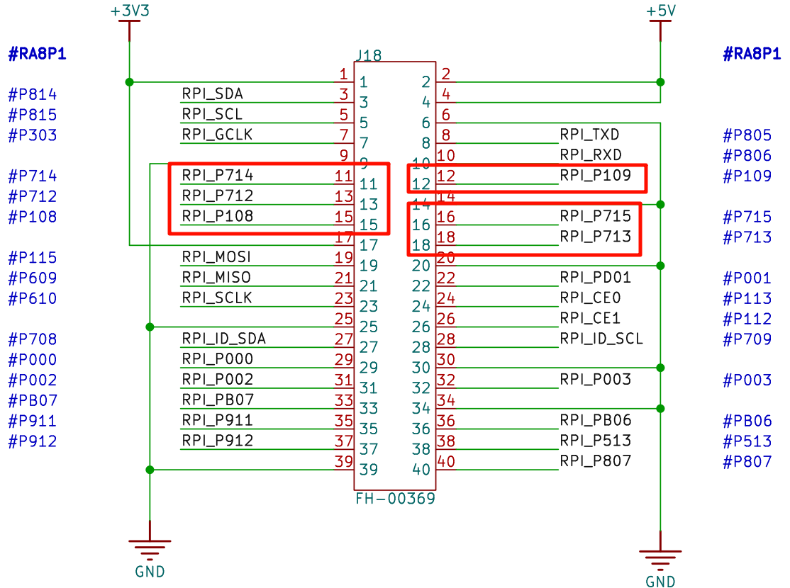
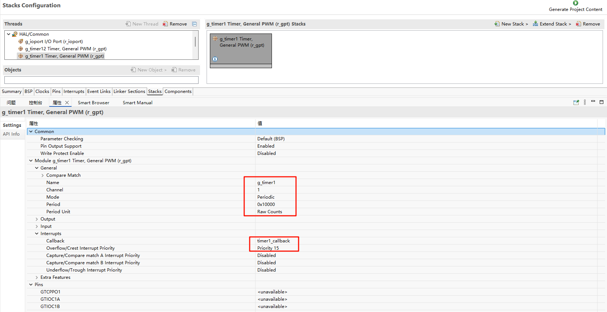
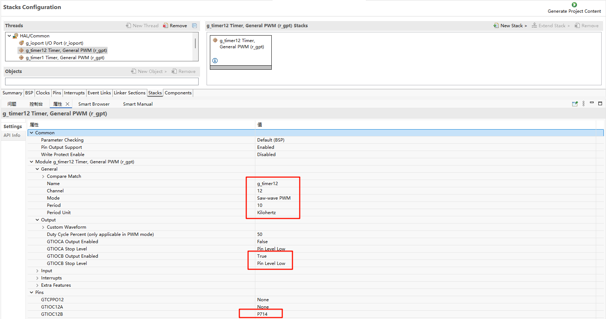
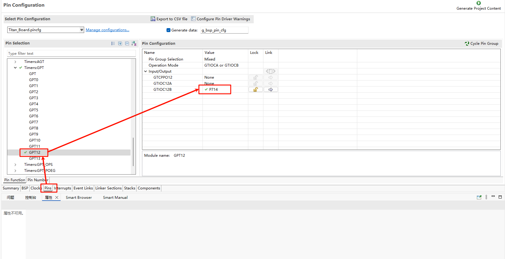
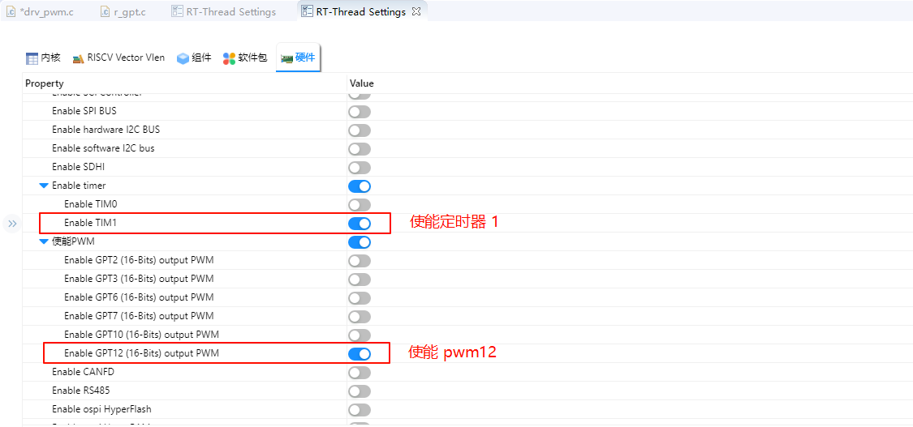
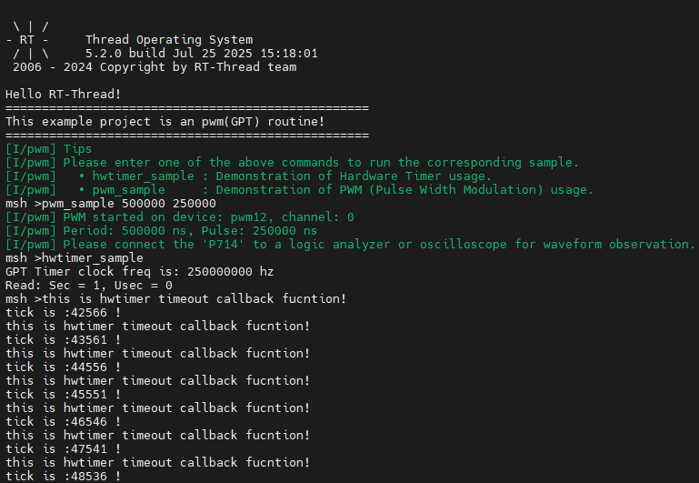
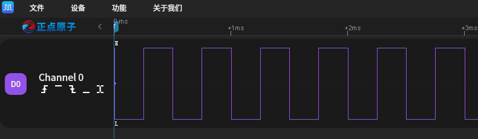

GPT 使用说明
中文 | English
简介
在我们具体的应用场合中往往都离不开 timer 的使用，本例程主要介绍了如何在 Titan Board 上使用 GPT 设备，包括基本定时器的使用和 PWM 的使用。
PWM 简介
**PWM(Pulse Width Modulation , 脉冲宽度调制)**是一种对模拟信号电平进行数字编码的方法，通过不同频率的脉冲使用方波的占空比用来对一个具体模拟信号的电平进行编码，使输出端得到一系列幅值相等的脉冲，用这些脉冲来代替所需要波形的设备。

上图是一个简单的 PWM 原理示意图，假定定时器工作模式为向上计数，当计数值小于阈值时，则输出一种电平状态，比如高电平，当计数值大于阈值时则输出相反的电平状态，比如低电平。当计数值达到最大值是，计数器从0开始重新计数，又回到最初的电平状态。高电平持续时间（脉冲宽度）和周期时间的比值就是占空比，范围为0~100%。上图高电平的持续时间刚好是周期时间的一半，所以占空比为50%。
一个比较常用的pwm控制情景就是用来调节灯或者屏幕的亮度，根据占空比的不同，就可以完成亮度的调节。PWM调节亮度并不是持续发光的，而是在不停地点亮、熄灭屏幕。当亮、灭交替够快时，肉眼就会认为一直在亮。在亮、灭的过程中，灭的状态持续时间越长，屏幕给肉眼的观感就是亮度越低。亮的时间越长，灭的时间就相应减少，屏幕就会变亮。

定时器（Timer）简介
1. 概述
定时器（Timer） 是微控制器（MCU）或嵌入式系统中用于产生精确时间间隔或计数事件的硬件模块。定时器通常可以：
产生固定时间间隔的中断
测量时间长度或事件间隔
驱动 PWM 信号生成
计数外部脉冲
定时器是 MCU 实时控制、PWM 输出、事件计数、定时采样等应用的核心模块。
2. 定时器类型
根据功能和用途，定时器主要可分为以下几类：
基本定时器（Basic Timer）
简单的计数器，可用于产生固定时间间隔中断
通常只有向上计数功能
通用定时器（General Purpose Timer）
支持多种模式：单次计数、循环计数、PWM 输出、输入捕获
可配置预分频器、计数模式和自动重装载值
高级定时器（Advanced Timer）
支持更复杂功能，如死区时间、同步触发、互补 PWM 输出
多用于电机控制和功率电子应用
看门狗定时器（Watchdog Timer）
用于系统可靠性监控
如果 MCU 未按时复位定时器，会触发复位或中断
实时时钟（RTC）定时器
提供日历/时钟功能
通常低功耗，可在待机模式下继续计时
3. 定时器工作原理
定时器通常由以下几个部分组成：
计数器（Counter）
用于累加或递减计数值
计数单位由 时钟频率（Timer Clock） 决定
预分频器（Prescaler）
用于将系统时钟分频，降低计数器计数速度
公式：Timer Tick Frequency = Timer Clock / (Prescaler + 1)
自动重装载寄存器（ARR / Period Register）
当计数器达到该值时触发中断或产生事件
可实现循环计数
中断/事件生成
定时器计数到 ARR 时可触发中断、PWM 更新或外部事件
4. 定时器模式
单次模式（One-Shot Mode）
计数器计数到目标值后停止
用于一次性延时或事件触发
循环模式（Auto-Reload / Continuous Mode）
计数器计数到目标值后自动重装载继续计数
用于周期性定时器和 PWM 输出
PWM 模式
通过比较寄存器（Compare Register）生成占空比可调的 PWM 信号
广泛应用于电机控制、LED 调光
输入捕获模式（Input Capture）
捕获外部信号的到达时间
可用于测量脉宽、频率或事件间隔
输出比较模式（Output Compare）
当计数器达到比较值时改变输出状态
用于定时事件触发或波形产生
RA8 系列 GPT 模块概述
Renesas RA8 系列微控制器集成了高性能的通用 PWM 定时器（GPT）模块，支持多种定时和控制功能，适用于多种应用场景。
GPT 模块特性
支持模式：周期模式、单次模式和 PWM 模式。
计数源：支持 PCLK、外部触发引脚（GTETRG）、GTIOC 引脚或 ELC 事件作为计数源。
PWM 输出：支持对 GTIOC 引脚输出周期性或 PWM 信号。
可配置性：支持运行时重新配置周期、占空比和比较匹配值。
计数方式：支持计数上升、下降或双向计数。
高分辨率：支持高分辨率 PWM 波形生成，适用于精密控制应用。
RT-Thread PWM 框架简介
RT-Thread PWM（Pulse Width Modulation）框架 是 RT-Thread 设备驱动层提供的统一接口，用于管理各类 MCU 的 PWM 硬件模块。该框架将底层 PWM 功能抽象为标准设备接口，使应用层能够通过统一 API 配置周期和脉冲宽度，实现跨平台的 PWM 控制和应用。
1. 设备模型
在 RT-Thread 中，PWM 被作为 设备对象（struct rt_device 的子类，类型为 RT_Device_Class_PWM）进行管理。开发者无需直接操作寄存器，只需通过 RT-Thread 提供的标准接口，即可完成 PWM 通道的配置、启用与禁用。
2. 操作接口
应用程序通过 RT-Thread 提供的 I/O 设备管理接口访问 PWM 设备，主要接口如下：
查找 PWM 设备
rt_device_t rt_device_find(const char* name);
设置 PWM 周期和脉冲宽度
rt_err_t rt_pwm_set(struct rt_device_pwm *device, int channel, rt_uint32_t period, rt_uint32_t pulse);
启用 PWM 通道
rt_err_t rt_pwm_enable(struct rt_device_pwm *device, int channel);
禁用 PWM 通道
rt_err_t rt_pwm_disable(struct rt_device_pwm *device, int channel);
3. 框架特点
接口统一：所有硬件 PWM 模块通过相同接口访问，简化上层开发。
跨平台支持：应用程序可在不同 MCU 平台间移植，无需修改 PWM 代码。
灵活通道控制：支持多通道独立配置、启用和禁用。
精确控制：可配置周期与脉冲宽度，实现高精度 PWM 输出。
高扩展性：可与定时器、DMA 等模块结合，实现复杂控制场景。
4. 运行时调整 PWM 参数
RA8 GPT 模块支持在运行时调整 PWM 的周期和占空比。可以使用以下函数进行调整：
rt_pwm_set()：设置 PWM 的周期和脉冲宽度。
例如，要将 PWM 的周期调整为 500000，占空比调整为 70%，可以使用以下代码：
#defien PWM_DEV_NAME "pwm12"
#define PWM_DEV_CHANNEL 0
struct rt_device_pwm *pwm_dev = RT_NULL;
rt_uint_32_t period = 500000;
rt_uint_32_t pulse = 350000;
pwm_dev = (struct rt_device_pwm *)rt_device_find(PWM_DEV_NAME);
rt_pwm_set(pwm_dev, PWM_DEV_CHANNEL, period, pulse);
rt_pwm_enable(pwm_dev, PWM_DEV_CHANNEL)
RT-Thread 硬件定时器框架简介
RT-Thread 硬件定时器（Hardware Timer，简称 hwtimer）框架 是 RT-Thread 设备驱动层提供的统一接口，用于管理 MCU 内部的定时器外设。该框架可实现高精度的定时控制，适用于周期性任务调度、事件计时、PWM 触发等场景。通过 hwtimer 框架，开发者可使用标准化接口完成硬件定时器的启停、模式配置、回调设置与时间读取等操作。
1. 设备模型
在 RT-Thread 中，硬件定时器被作为 设备对象（struct rt_device 的子类，类型为 RT_Device_Class_Timer）进行管理。开发者无需直接操作底层定时器寄存器，只需通过 RT-Thread 提供的标准设备接口，即可控制硬件定时器的运行。
2. 操作接口
应用程序通过 RT-Thread 的设备管理接口访问硬件定时器设备。常用接口如下：
查找定时器设备
rt_device_t rt_device_find(const char* name);
打开定时器设备（读写方式）
rt_err_t rt_device_open(rt_device_t dev, rt_uint16_t oflags);
设置超时回调函数
rt_err_t rt_device_set_rx_indicate(rt_device_t dev, rt_err_t (*rx_ind)(rt_device_t dev, rt_size_t size));
控制定时器（设置模式/频率/启动/停止）
rt_err_t rt_device_control(rt_device_t dev, rt_uint8_t cmd, void* arg);
常用命令宏定义如下：
#define HWTIMER_CTRL_FREQ_SET (0x10) /* 设置定时器计数频率 */
#define HWTIMER_CTRL_MODE_SET (0x11) /* 设置定时器模式 */
#define HWTIMER_CTRL_START (0x12) /* 启动定时器 */
#define HWTIMER_CTRL_STOP (0x13) /* 停止定时器 */
设置定时器超时时间并启动
rt_size_t rt_device_write(rt_device_t dev, rt_off_t pos, const void* buffer, rt_size_t size);
获取定时器当前计数值
rt_size_t rt_device_read(rt_device_t dev, rt_off_t pos, void* buffer, rt_size_t size);
关闭定时器设备
rt_err_t rt_device_close(rt_device_t dev);
3. 框架特点
接口统一：所有硬件定时器设备通过相同接口进行管理。
高精度控制：支持微秒级定时，满足高实时性任务需求。
多模式支持：支持单次定时（One-shot）与周期定时（Periodic）模式。
事件回调机制：支持超时中断回调函数注册。
跨平台兼容：不同 MCU 平台间移植时无需修改上层应用代码。
硬件说明
Titan Board 的树莓派接口上有 6 个 PWM 接口，本示例使用 P714 输出 PWM 波。

FSP 配置
FSP 分别配置使能 GPT1 为基本定时器模式，GPT12 为 PWM 模式：


并配置 Pins 使能 GPT12：

RT-Thread Settings 配置
在配置中打开 timer1 使能与 PWM12 使能：

示例工程说明
本例程的源码位于/project/Titan_driver_gpt：
/* This is a hwtimer example */
#define HWTIMER_DEV_NAME "timer1" /* device name */
static rt_err_t timeout_cb(rt_device_t dev, rt_size_t size)
{
rt_kprintf("this is hwtimer timeout callback fucntion!\n");
rt_kprintf("tick is :%d !\n", rt_tick_get());
return RT_EOK;
}
int hwtimer_sample(void)
{
rt_err_t ret = RT_EOK;
rt_hwtimerval_t timeout_s;
rt_device_t hw_dev = RT_NULL;
rt_hwtimer_mode_t mode;
rt_uint32_t freq = R_FSP_SystemClockHzGet(FSP_PRIV_CLOCK_PCLKD) >> g_timer1_cfg.source_div;
rt_kprintf("GPT Timer clock freq is: %d hz\n", freq);
hw_dev = rt_device_find(HWTIMER_DEV_NAME);
if (hw_dev == RT_NULL)
{
rt_kprintf("hwtimer sample run failed! can't find %s device!\n", HWTIMER_DEV_NAME);
return -RT_ERROR;
}
ret = rt_device_open(hw_dev, RT_DEVICE_OFLAG_RDWR);
if (ret != RT_EOK)
{
rt_kprintf("open %s device failed!\n", HWTIMER_DEV_NAME);
return ret;
}
rt_device_set_rx_indicate(hw_dev, timeout_cb);
rt_device_control(hw_dev, HWTIMER_CTRL_FREQ_SET, &freq);
mode = HWTIMER_MODE_PERIOD;
ret = rt_device_control(hw_dev, HWTIMER_CTRL_MODE_SET, &mode);
if (ret != RT_EOK)
{
rt_kprintf("set mode failed! ret is :%d\n", ret);
return ret;
}
/* Example Set the timeout period of the timer */
timeout_s.sec = 1; /* secend */
timeout_s.usec = 0; /* microsecend */
if (rt_device_write(hw_dev, 0, &timeout_s, sizeof(timeout_s)) != sizeof(timeout_s))
{
rt_kprintf("set timeout value failed\n");
return -RT_ERROR;
}
/* read hwtimer value */
rt_device_read(hw_dev, 0, &timeout_s, sizeof(timeout_s));
rt_kprintf("Read: Sec = %d, Usec = %d\n", timeout_s.sec, timeout_s.usec);
return ret;
}
MSH_CMD_EXPORT(hwtimer_sample, hwtimer sample);
每隔 1s 触发一次中断回调函数打印输出，下面是 PWM 配置使能：
PWM 相关宏定义：
当前版本的 PWM 驱动将每个通道都看做一个单独的 PWM 设备，每个设备都只有一个通道 0。使用 PWM12 设备，注意此处通道选择为 0 通道；
#define PWM_DEV_NAME "pwm12" /* PWM设备名称 */
#define PWM_DEV_CHANNEL 0 /* PWM通道 */
struct rt_device_pwm *pwm_dev; /* PWM设备句柄 */
配置 PWM 周期以及占空比：
static int pwm_sample(int argc, char *argv[])
{
rt_uint32_t period, pulse;
if (argc != 3)
{
LOG_I("Usage: pwm_sample <period> <pulse>");
LOG_I("Example: pwm_sample 500000 250000");
return -RT_ERROR;
}
period = (rt_uint32_t)atoi(argv[1]);
pulse = (rt_uint32_t)atoi(argv[2]);
if (period == 0 || pulse > period)
{
LOG_E("Error: Invalid parameters. Ensure period > 0 and pulse <= period.");
return -RT_ERROR;
}
pwm_dev = (struct rt_device_pwm *)rt_device_find(PWM_DEV_NAME);
if (pwm_dev == RT_NULL)
{
LOG_E("Error: Cannot find PWM device named '%s'\n", PWM_DEV_NAME);
return -RT_ERROR;
}
if (rt_pwm_set(pwm_dev, PWM_DEV_CHANNEL, period, pulse) != RT_EOK)
{
LOG_E("Error: Failed to set PWM configuration.");
return -RT_ERROR;
}
if (rt_pwm_enable(pwm_dev, PWM_DEV_CHANNEL) != RT_EOK)
{
LOG_E("Error: Failed to enable PWM output.");
return -RT_ERROR;
}
LOG_I("PWM started on device: %s, channel: %d", PWM_DEV_NAME, PWM_DEV_CHANNEL);
LOG_I("Period: %u ns, Pulse: %u ns", period, pulse);
LOG_I("Please connect the \'P714\' to a logic analyzer or oscilloscope for waveform observation.");
return RT_EOK;
}
MSH_CMD_EXPORT(pwm_sample, Configure and start PWM output: pwm_sample <period> <pulse>);
编译&下载
RT-Thread Studio：在 RT-Thread Studio 的包管理器中下载 Titan Board 资源包，然后创建新工程，执行编译。
编译完成后，将开发板的 USB-DBG 接口与 PC 机连接，然后将固件下载至开发板。
运行效果
在串口终端分别输入pwm_sample、hwtimer_sample查看具体效果；
每隔 1s 触发回调函数并打印输出：

使用逻辑分析仪量取 PWM 输出波形如下所示：
